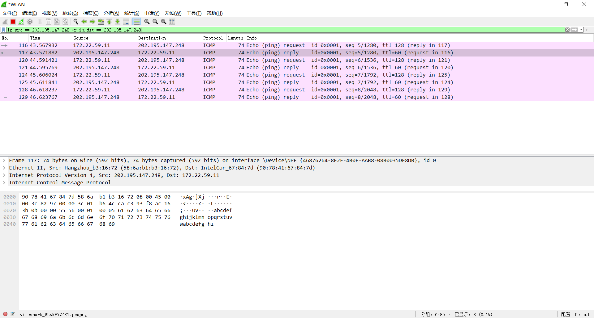

Ping （Packet Internet Groper）是一种因特网包探索器，用于测试网络连接量的程序。本文将基于 Socket 编程，实现一个基本的 Ping 命令程序。
ICMP 报文分析 ICMP 报文捕获 在控制台输入 ping 202.195.147.248，对该目的主机发起请求，可以看到控制台输出了一系列统计信息：4 个数据包全部接收并且往返时间为 5 ms（较短），表明与该主机之间的连接畅通。
使用 Wireshark 工具捕获 icmp 数据包，为了避免无关数据包的干扰，可以使用 filter 对数据包进行过滤，在上部栏输入 ip.src == 202.195.147.248 or ip.dst == 202.195.147.248，表明只筛选源地址或目的地址为 202.195.147.248 的数据包，最终可以得到数据包的内容。

Wireshark 数据包分析 根据 ICMP 报文的格式进行分析:
Type：数据包类型，占 1 Byte，为 0x00，代表回送报文。
Code：代码部分，占 1 Byte，为 0x00.
Checksum：检验和，占 2 Bytes，为 0x554c.
Identifier(IE)：占 2 Bytes，为 0x0001.
Identifier(LE)：占 2 Bytes，为 0x0100.
Sequence Number(BE)：占 2 Bytes，为 0x000f.
Sequence Number(LE)：占 2 Bytes，为 0x0f00.
Data：占 32 Bytes，为6162636465666768696a6b6c6d6e6f7071727374757677616263646566676869.
实现思路 构造 ICMP 报文 自定义数据结构 icmpHeader 表示 ICMP 报文头部，包含类型、代码、检验和、标识符和序列号。
1 2 3 4 5 6 7 8 struct icmpHeader { unsigned char type; unsigned char code; unsigned short checkSum; unsigned short id; unsigned short sequence; };
填充该报文，类型为 8 表示请求报文。检验和使用特定的算法计算，关于算法的具体内容可以自行查看相关文档，在此不过多赘述。标识符使用进程 id 填充。最后在 ICMP 报文头的尾部，添加 32 字节的数据作为 ICMP 报文的数据部分。
1 2 3 4 5 6 7 8 9 10 11 12 char sendBuf[8 + 32 ] = { 0 };icmpHeader* pIcmp = (icmpHeader*)sendBuf; pIcmp->type = 8 ; pIcmp->code = 0 ; pIcmp->checkSum = 0 ; pIcmp->id = (USHORT)::GetCurrentProcessId (); pIcmp->sequence = 0 ; memcpy (sendBuf + 8 , "abcdelmnopqrstuvwiammekakuactor" , 32 );pIcmp->checkSum = computeCks ((icmpHeader*)sendBuf, sizeof (sendBuf));
发送请求报文 该部分使用 Socket 编程向指定 IP 地址发送 ICMP 请求报文。需要注意的是，在创建套接字时，需要使用原始套接字，且 protocol 参数为 IPPROTO_ICMP，表明使用 ICMP 协议。SOCKET s = socket(AF_INET, SOCK_RAW, IPPROTO_ICMP); 报文发送成功后，接收从客户端发送的回送报文信息。
1 2 3 4 5 6 7 8 9 10 11 WORD wReq = MAKEWORD (2 , 2 ); WSADATA wsadata; WSAStartup (wReq, &wsadata);SOCKADDR_IN serverAddr; memset (&serverAddr, 0 , sizeof (serverAddr));serverAddr.sin_family = AF_INET; serverAddr.sin_addr.S_un.S_addr = inet_addr (targetIP.c_str ()); SOCKET s = socket (AF_INET, SOCK_RAW, IPPROTO_ICMP);
为了得到报文往返的时间，可以在发送前和接收后使用 GetTickCount64() 获取从操作系统启动到现在所经历的的时间 start 和 end，两时间相减得到时间差。
此外，由于 recvfrom() 在未收到报文时将会阻塞，因此可以使用 setsockopt() 设定一个接收超时时间，在超过指定时间未受到数据时返回 -1，表示接收异常。
1 setsockopt (s, SOL_SOCKET, SO_RCVTIMEO, (const char *)&timeOut, sizeof (timeOut));
解析回送报文 根据回送的 IP 数据包的指定格式对信息进行解析，IPv4 头部的 4 到 8 位为 IP 报文头部长度，第 9 个字节是 TTL 的值。
完整代码 1 2 3 4 5 6 7 8 9 10 11 12 13 14 15 16 17 18 19 20 21 22 23 24 25 26 27 28 29 30 31 32 33 34 35 36 37 38 39 40 41 42 43 44 45 46 47 48 49 50 51 52 53 54 55 56 57 58 59 60 61 62 63 64 65 66 67 68 69 70 71 72 73 74 75 76 77 78 79 80 81 82 83 84 85 86 87 88 89 90 91 92 93 94 95 96 97 98 99 100 101 102 103 104 105 106 107 108 109 110 111 112 113 114 115 116 117 #include <iostream> #include <string> #include <winsock.h> #include <thread> #pragma comment(lib,"ws2_32.lib" ) struct icmpHeader { unsigned char type; unsigned char code; unsigned short checkSum; unsigned short id; unsigned short sequence; }; unsigned short computeCks (icmpHeader* picmp, int len) long sum = 0 ; unsigned short * pusicmp = (unsigned short *)picmp; while (len > 1 ) { sum += *(pusicmp++); if (sum & 0x80000000 ) sum = (sum & 0xffff ) + (sum >> 16 ); len -= 2 ; } if (len) sum += (unsigned short )*(unsigned char *)pusicmp; while (sum >> 16 ) sum = (sum & 0xffff ) + (sum >> 16 ); return (unsigned short )~sum; } int ping (const std::string& targetIP) WORD wReq = MAKEWORD (2 , 2 ); WSADATA wsadata; WSAStartup (wReq, &wsadata); SOCKADDR_IN serverAddr; memset (&serverAddr, 0 , sizeof (serverAddr)); serverAddr.sin_family = AF_INET; serverAddr.sin_addr.S_un.S_addr = inet_addr (targetIP.c_str ()); SOCKET s = socket (AF_INET, SOCK_RAW, IPPROTO_ICMP); char sendBuf[8 + 32 ] = { 0 }; icmpHeader* pIcmp = (icmpHeader*)sendBuf; pIcmp->type = 8 ; pIcmp->code = 0 ; pIcmp->checkSum = 0 ; pIcmp->id = (USHORT)::GetCurrentProcessId (); pIcmp->sequence = 0 ; memcpy (sendBuf + 8 , "abcdelmnopqrstuvwiammekakuactor" , 32 ); pIcmp->checkSum = computeCks ((icmpHeader*)sendBuf, sizeof (sendBuf)); DWORD start = GetTickCount64 (); int sendLen = sendto (s, sendBuf, sizeof (sendBuf), 0 , (SOCKADDR*)&serverAddr, sizeof (SOCKADDR)); if (sendLen < 0 ) printf ("errno = %d\n" , GetLastError ()); char recvBuf[1024 ]; SOCKADDR_IN fromAddr; int fLen = sizeof (fromAddr); unsigned timeOut = 1000 ; setsockopt (s, SOL_SOCKET, SO_RCVTIMEO, (const char *)&timeOut, sizeof (timeOut)); while (true ) { int len = recvfrom (s, recvBuf, 1024 , 0 , (SOCKADDR*)&fromAddr, &fLen); if (len < 0 ) { std::cout << "请求超时" << std::endl; return INT32_MAX; } else break ; } DWORD end = GetTickCount64 (); DWORD timeSpan = end - start; char ipInfo = recvBuf[0 ]; unsigned char ttl = recvBuf[8 ]; int ipHeadLen = ((char )(ipInfo << 4 ) >> 4 ) * 4 ; icmpHeader* icmpResp = (icmpHeader*)(recvBuf + ipHeadLen); if (icmpResp->type == 0 ) { printf ("来自 %s 的回复：字节=32 时间=%2dms TTL=%d\n" , targetIP.c_str (), timeSpan, ttl); return timeSpan; } else { printf ("请求超时。type = %d\n" , icmpResp->type); return INT32_MAX; } } int main () std::cout << "请输入目的IP地址：" ; std::string IP; std::cin >> IP; int maxTime = INT32_MIN, minTime = INT32_MAX, timeSum = 0 , acpkgCnt = 0 ; printf ("\n正在 Ping %s 具有 32 字节的数据:\n" , IP.c_str ()); for (int i = 0 ; i < 4 ; ++i) { std::this_thread::sleep_for (std::chrono::seconds (1 )); int timeSpan = ping (IP); acpkgCnt += timeSpan != INT32_MAX; maxTime = max (maxTime, timeSpan); minTime = min (minTime, timeSpan); timeSum += timeSpan; } printf ("\n%s 的 Ping 统计信息:\n" , IP.c_str ()); printf (" 数据包: 已发送 = 4，已接收 = %d，丢失 = %d (%d%% 丢失)，\n" , acpkgCnt, 4 - acpkgCnt, (4 - acpkgCnt) * 100 / 4 ); if (!acpkgCnt) return 0 ; printf ("往返行程的估计时间(以毫秒为单位):\n" ); printf (" 最短 = %dms，最长 = %dms，平均 = %dms\n" , minTime, maxTime, timeSum / acpkgCnt); }
运行结果
可见，本地与该目的主机的连通性较好。
可见，本地与该目的主机无法连通。


 微信
微信 支付宝
支付宝